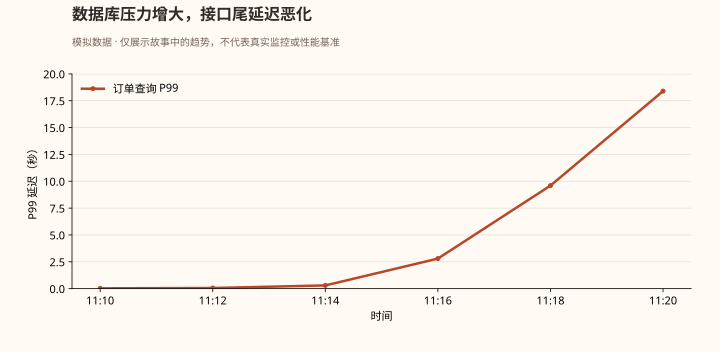
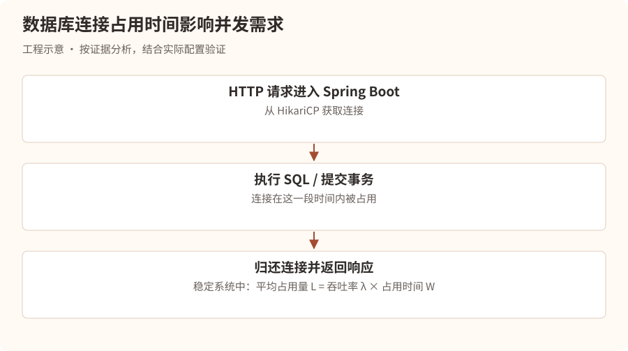
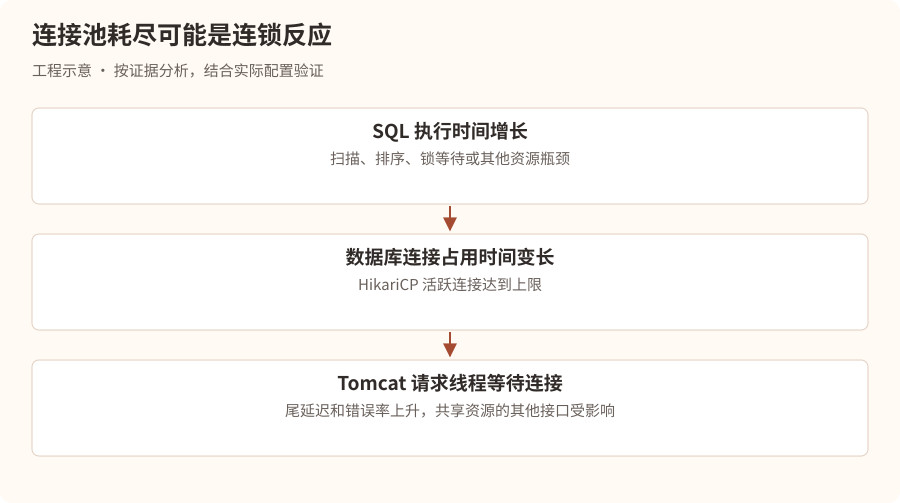
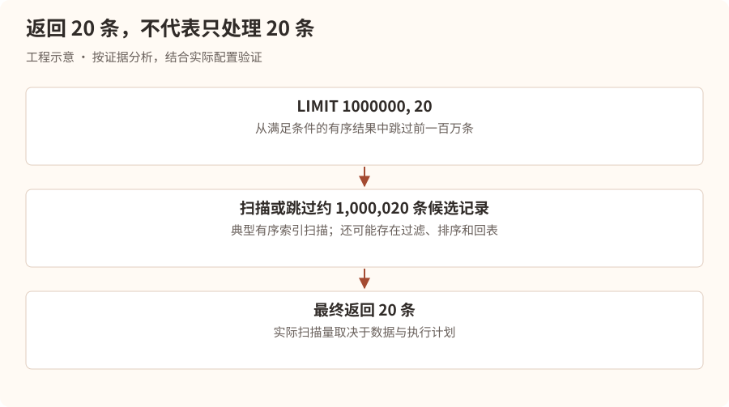
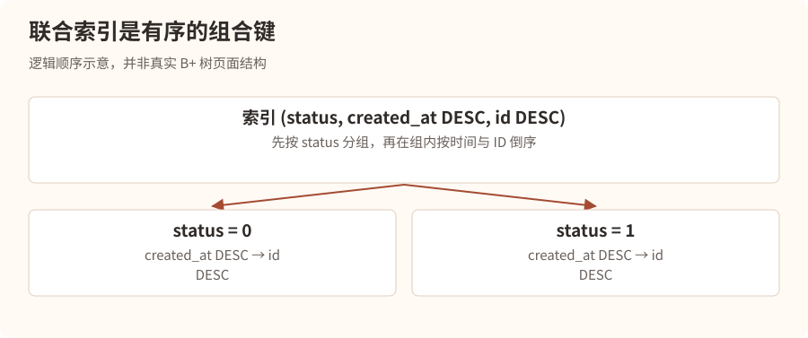
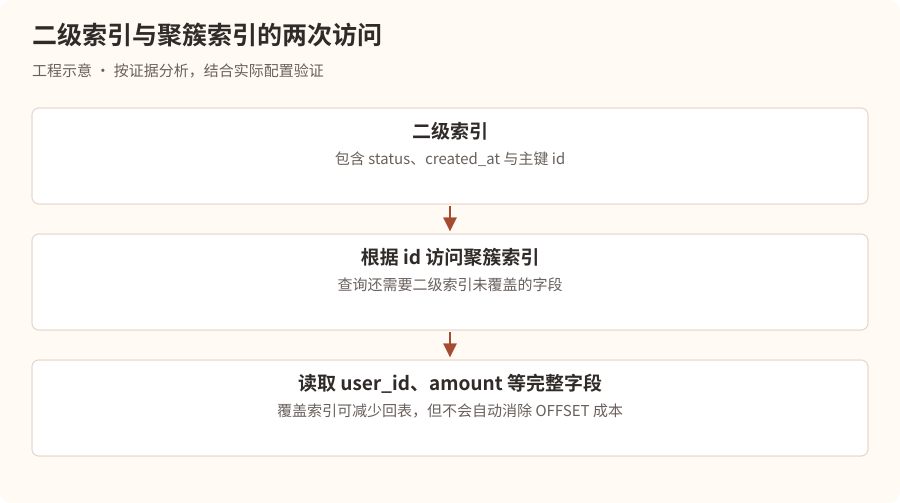
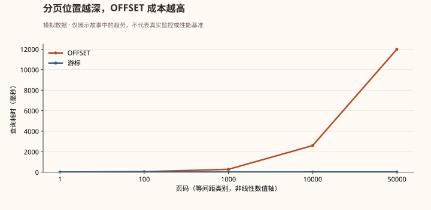
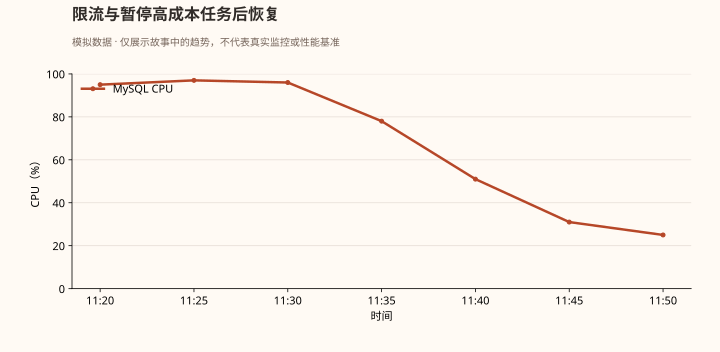

第一幕：上午十一点，数据库开始窒息
上午 11:20。
星海科技，研发中心。
林川刚刚解决了上一场线程池阻塞事故。
他以为自己已经掌握了线上故障排查的基本方法。
直到一条来自 MySQL 的告警出现在屏幕上。
事故快照 · 虚构场景
| 项目 | 观测值 |
|---|---|
| 等级与时间 | P1 · 11:20:36 |
| 实例 | mysql-order-primary |
| MySQL CPU | 95% |
| 接口 P99 延迟 | 18.4s |
| HikariCP 活跃连接 | 50/50 |
| 接口错误率 | 32.7% |
| 影响 | 订单列表超时，部分支付查询受影响 |
“又出事了？”
林川打开 Grafana。
过去十分钟，订单查询接口的响应时间从几十毫秒一路上涨。

他立即查看应用日志。
SQLTransientConnectionException:
HikariPool-1 - Connection is not available,
request timed out after 30000ms.
“数据库连接池耗尽？”
林川想起了上一章。
“是不是连接泄漏？”
这时，技术负责人陈默走进办公室。
“先别下结论。”
“连接池耗尽只是现象。连接可能没有泄漏，而是被长时间运行的 SQL 占用了。”
“那该怎么判断？”
陈默打开数据库监控。
“今天我们要调查的是一条 SQL。”
“它没有死循环，没有语法错误，甚至使用了索引。”
“但它几乎拖垮了整个数据库。”
第二幕：第一条线索——连接池为什么耗尽？
陈默没有立即查看 SQL。
他先问了一个问题。
“假设你的 HikariCP 最大连接数是 50，为什么会被占满？”
林川回答：
“可能是并发请求太多，也可能是 SQL 执行太慢、事务太长，或者连接没有归还。”
“很好。”
“那我们先理解连接池为什么会被慢 SQL 拖垮。”
一条请求的生命
正常情况下：

陈默在白板上写下一条公式：
L = λ × W
“这是 Little 定律。”
“在稳定系统中，平均在系统内的请求数量，等于吞吐率乘以平均停留时间。”
“假设每秒有 100 个需要数据库连接的请求，每个请求平均占用连接 20ms。”
100 × 0.02 = 2
“平均大约需要两个被占用的连接。”
“但是，如果 SQL 从 20ms 变成 2 秒呢？”
100 × 2 = 200
林川一惊。
“平均需要 200 个连接才能维持同样的吞吐！”
“对。但你的连接池只有 50 个。”
“于是请求开始等待连接，排队越来越严重。”
“注意，这里的 200 是假设系统仍能稳定维持原有吞吐时的平均并发占用需求，并不是说连接池真的能提供 200 个连接。实际上，系统会受到容量限制，吞吐下降并出现排队和超时。”
为什么慢 SQL 会引起连锁故障？

“所以，”陈默说道，“线上排查最重要的是区分根因与连锁反应。”
“数据库连接池耗尽，可能只是慢 SQL 的下游症状。”
第三幕：寻找凶手——究竟是哪条 SQL？
林川打开 MySQL 终端。
“我先执行 SHOW PROCESSLIST。”
SHOW FULL PROCESSLIST;
屏幕上出现大量类似记录：
Id Time State Info
-----------------------------------------------
421 12 Sending data SELECT ... FROM orders
427 15 Sending data SELECT ... FROM orders
435 17 Sending data SELECT ... FROM orders
“都是订单查询！”
陈默说道：
“SHOW FULL PROCESSLIST 可以帮助我们查看当前连接及正在执行的语句。”
“不过，Sending data 这样的状态名不能直接理解为正在向客户端传输数据。它也可能涵盖读取、处理和返回查询结果的过程。”
“我们需要进一步确认哪类 SQL 消耗了最多资源。”
第一件武器：慢查询日志
SHOW VARIABLES LIKE 'slow_query_log';
SHOW VARIABLES LIKE 'long_query_time';
陈默解释：
“慢查询日志可以记录执行时间超过阈值的语句。”
“但线上修改日志配置需要考虑日志量、I/O 和管理规范，不能随意在高负载数据库上开启大量详细日志。”
林川查看已有的慢查询日志。
Query_time: 18.241
Rows_examined: 1000020
Rows_sent: 20
下面是一条 SQL：
SELECT
id,
user_id,
amount,
status,
created_at
FROM orders
WHERE status = 1
ORDER BY created_at DESC
LIMIT 1000000, 20;
林川皱起眉头。
“这条 SQL 看起来很普通。”
“而且 status 和 created_at 都有索引。”
陈默问：
“你觉得数据库为了返回 20 条记录，需要处理多少条？”
“20 条？”
“你再看看 LIMIT。”
林川看了一眼。
LIMIT 1000000, 20
他突然意识到问题。
“要跳过前面一百万条！”
陈默点点头。
“这就是今天的第一个凶手。”
第四幕：深分页——为了寻找二十个人，翻过一百万份档案
陈默在白板上画了一座巨大的档案馆。
“假设数据库是一座档案馆。”
“你想找最新的 20 份订单。”
“如果直接取第一页，管理员只需要找到最前面的 20 份。”
“但如果你说，先跳过一百万份，再给我后面的 20 份呢？”
林川回答：
“那管理员就得先走过前面一百万份。”
“对。”
“即使这些档案已经按照时间排序，也不代表数据库可以直接跳到第 1000001 条。”
LIMIT 的真正含义
LIMIT 1000000, 20;
相当于：
LIMIT 20 OFFSET 1000000;
在典型的有序索引扫描执行计划中，MySQL 需要扫描或跳过大量符合条件的索引记录，才能返回最后 20 条。
如果还涉及回表、排序、过滤等操作，成本可能进一步增加。

林川问：
“可是我们给 created_at 建了索引，为什么还是慢？”
陈默回答：
“因为索引解决的是查找和有序访问的问题。”
“它不能自动消除深分页需要跳过大量记录的成本。”
“使用了索引，不等于 SQL 一定高效。”
第五幕：EXPLAIN——审问 MySQL 优化器
“那我们怎么知道 MySQL 到底执行了什么？”
林川问。
陈默打开终端。
“用 EXPLAIN。”
EXPLAIN
SELECT
id, user_id, amount, status, created_at
FROM orders
WHERE status = 1
ORDER BY created_at DESC
LIMIT 1000000, 20;
假设查询计划如下：
| type | key | rows | Extra |
|---|---|---|---|
| index | idx_created_at | 2500000 | Using where |
林川问：
“type=index 不是说明走索引了吗？”
“是使用了索引扫描访问方式，但并不代表只读取了少量数据。”
“index 往往意味着扫描索引中的一段甚至大量条目。”
“和 const、ref、range 等访问方式相比，不能单凭名称判断实际性能，仍然要结合扫描量和执行时间。”
EXPLAIN 中最值得关注的字段
| 字段 | 主要含义 |
|---|---|
| type | 表访问方式 |
| possible_keys | 优化器认为可能使用的索引 |
| key | 实际选择的索引 |
| rows | 估计需要检查的行数 |
| filtered | 估计过滤后保留的比例 |
| Extra | 排序、覆盖索引、临时表等额外信息 |
陈默继续说道：
“尤其注意，rows 通常是优化器估算值，不是实际扫描行数。”
“如果要看实际执行情况呢？”
林川回答：
“EXPLAIN ANALYZE？”
“对。MySQL 8.0.18 及之后的版本支持它。”
EXPLAIN ANALYZE
SELECT ...
“它会真正执行语句，并给出执行计划中各节点的实际耗时和行数信息。”
“所以线上使用时必须谨慎，尤其不能在事故高峰期随意执行可能产生巨大开销的查询。”
EXPLAIN 与 EXPLAIN ANALYZE 的区别
EXPLAIN
主要展示优化器选择的执行计划和估算成本，通常不实际执行目标 SELECT。
EXPLAIN ANALYZE
实际执行语句并收集运行时统计，可以对比估算行数和实际行数，发现优化器估计偏差。
“林川，记住。”
“优化 SQL，不是看有没有索引。”
“而是看 MySQL 实际如何访问数据、处理多少行、执行多少次操作，以及耗费多少时间。”
第六幕：第二个凶手——索引明明存在，为什么还要排序？
林川继续检查订单表结构。
CREATE TABLE orders (
id BIGINT PRIMARY KEY,
user_id BIGINT NOT NULL,
amount DECIMAL(10,2) NOT NULL,
status TINYINT NOT NULL,
created_at DATETIME NOT NULL,
KEY idx_status (status),
KEY idx_created_at (created_at)
);
“我们已经有 status 和 created_at 两个索引。”
“那为什么还会慢？”
陈默反问：
“你的 SQL 需要做哪两件事？”
“先过滤 status = 1，然后按照 created_at DESC 排序。”
“那两个独立索引就一定能同时高效完成过滤和排序吗？”
“不一定。”
“对。”
“如果 MySQL 使用 idx_status 找到所有状态为 1 的订单，它可能还需要对结果进行排序。”
“如果使用 idx_created_at 按时间顺序扫描，它可能需要逐条判断 status 是否等于 1。”
“优化器会根据统计信息和成本模型选择计划。”
联合索引登场
陈默写下：
CREATE INDEX idx_status_created_id
ON orders(status, created_at DESC, id DESC);
“对于下面的查询：”
SELECT id, user_id, amount, status, created_at
FROM orders
WHERE status = 1
ORDER BY created_at DESC, id DESC
LIMIT 20;
“这个联合索引通常更有利于按照 status 定位，再按照 created_at 和 id 的顺序读取数据。”
“因为 status 是等值条件，后续索引列的顺序可以用于满足排序要求。”
林川问：
“为什么还要加 id？”
“因为 created_at 可能重复。”
“如果只按时间排序，多个订单的时间相同，分页边界可能不稳定。”
“加上唯一的 id，就能形成确定性的排序顺序。”
工程补充：确定性排序不等于多次翻页共享同一个数据快照。若翻页期间排序字段或筛选条件发生更新，仍可能漏读或重复；需要明确业务是否接受实时变化，或采用快照、版本边界等策略。
联合索引的排列方式为什么重要？
陈默画出一个 B+ 树索引的简化顺序。

“但要注意，”陈默补充，“联合索引不是越长越好。”
“它会增加存储空间和写入维护成本。”
“而且是否真正使用索引完成排序，还要看查询条件、排序方向、执行计划和 MySQL 版本。”
第七幕：回表——索引找到了地址，却还要跑一趟仓库
林川突然问：
“既然联合索引已经包含 status、created_at 和 id，为什么查询仍然可能很慢？”
陈默回答：
“因为你的 SELECT 还需要 user_id 和 amount。”
“而它们不在这个二级索引中。”
“这就涉及回表。”
InnoDB 的两种索引
陈默解释：
“在 InnoDB 中，聚簇索引的叶子记录存储整行数据。”
“对于常见的以主键作为聚簇索引的表，二级索引的叶子记录包含索引列和用于定位聚簇记录的主键值。”
“因此，当查询需要的字段不在二级索引中时，MySQL 可能需要根据主键再次访问聚簇索引。”
这就是回表。

“如果深分页过程中，执行计划对大量候选行进行回表，成本可能很高。”
“那怎么优化？”
“其中一种方式是先在覆盖索引中完成分页，取得少量 ID，再根据这些 ID 获取完整数据。”
例如：
SELECT o.id, o.user_id, o.amount,
o.status, o.created_at
FROM orders o
JOIN (
SELECT id
FROM orders
WHERE status = 1
ORDER BY created_at DESC, id DESC
LIMIT 1000000, 20
) page ON o.id = page.id
ORDER BY o.created_at DESC, o.id DESC;
林川眼睛一亮。
“内层查询只使用索引列，减少大规模回表，外层只对 20 条记录获取完整字段。”
“对。”
“不过，这并没有消除跳过一百万条索引记录的成本。”
“所以它只是针对某些执行计划的优化，而不是深分页的根本解决方案。”
第八幕：真正的解决方案——游标分页
陈默关闭了旧 SQL。
“现在我们不再让数据库翻过一百万条记录。”
“我们换一种思路。”
“假设用户已经看到了第 100 页。”
“他想看下一页。”
“你真的需要告诉数据库，这是第 101 页吗？”
林川思考片刻。
“不一定。”
“如果知道上一页最后一条记录的时间和 ID，就可以直接从那里继续查询。”
“这就是 Keyset Pagination，也叫游标分页。”
传统 OFFSET 分页
SELECT id, user_id, amount, created_at
FROM orders
WHERE status = 1
ORDER BY created_at DESC, id DESC
LIMIT 1000000, 20;
需要跳过大量记录。
游标分页
假设上一页最后一条记录：
created_at = 2026-10-16 10:30:00
id = 987654
下一页查询：
SELECT id, user_id, amount, created_at
FROM orders
WHERE status = 1
AND (
created_at < '2026-10-16 10:30:00'
OR (
created_at = '2026-10-16 10:30:00'
AND id < 987654
)
)
ORDER BY created_at DESC, id DESC
LIMIT 20;
“这样数据库就可以利用索引，从游标附近继续读取后续记录。”
“而不必每次从头跳过一百万条。”
陈默补充：
“这里的游标不是数据库服务端 Cursor，而是由业务保存的分页位置。”
“另外，在支持行构造器比较的 MySQL 中，也可以写成类似 (created_at, id) < (?, ?) 的形式，但具体索引利用情况仍需要通过执行计划验证。”
OFFSET 与游标分页对比

林川说道：
“所以游标分页的优势，是查询成本通常不会随着页码线性增加。”
“对，但有前提。”
“必须有合适的索引，游标字段需要形成稳定排序，而且查询条件要与索引匹配。”
“另外，游标分页不擅长直接跳转到任意页码。”
“如果业务必须支持跳转到第 50000 页，就需要考虑其他方案，比如限制最大翻页深度、搜索引擎、预计算、异步导出，或者重新设计产品交互。”
第九幕：索引失效的六种陷阱
事故已经找到主要原因。
但陈默并没有停止教学。
“林川，今天我们遇到的是深分页。”
“下次可能是索引失效。”
“你需要知道，哪些 SQL 写法会让索引难以发挥作用。”
他在白板上列出了六种典型情况。
陷阱一：对索引列进行函数运算
SELECT *
FROM orders
WHERE DATE(created_at) = '2026-10-16';
普通的 created_at 索引通常难以直接用于这种函数表达式的范围定位。
更推荐：
SELECT *
FROM orders
WHERE created_at >= '2026-10-16'
AND created_at < '2026-10-17';
“这样更容易使用索引范围扫描。”
“但如果有合适的函数索引或生成列索引，也可能有其他优化方案。”
陷阱二：LIKE 前置通配符
SELECT *
FROM users
WHERE name LIKE '%张三';
普通 B+ 树索引通常无法高效进行前缀定位。
但：
WHERE name LIKE '张三%';
通常更容易利用索引范围。
陷阱三：隐式类型转换
SELECT *
FROM users
WHERE phone = 13800138000;
假设 phone 是字符串类型。
“这种写法可能引发类型转换和不符合预期的索引利用。”
“但不能简单记成只要发生隐式转换就一定不走索引，具体还要看类型、转换方向和优化器。”
“最稳妥的做法是让参数类型与字段类型一致。”
陷阱四：联合索引不满足有效前缀条件
假设索引：
INDEX idx_abc(a, b, c)
查询：
WHERE b = 10 AND c = 20
“通常无法像 a = ? AND b = ? 那样充分利用索引的前导列。”
“不过 MySQL 某些版本和场景可能采用 Skip Scan 等优化，不能把最左前缀规则理解成绝对的‘完全不使用索引’。”
陷阱五：OR 条件
WHERE user_id = 100
OR amount > 500;
“如果两个条件的索引选择性、数据分布和成本不合适，优化器可能选择全表扫描。”
“某些情况下也可能使用 Index Merge。”
“所以 OR 不等于必然索引失效。”
陷阱六：选择性太低
WHERE status = 1
“假设全表 95% 的订单都是状态 1。”
“即使 status 有索引，优化器也可能认为全表扫描更便宜。”
“因为通过二级索引找到大量记录，再进行回表，可能比直接扫描表还慢。”
林川总结：
“所以索引是否有效，最终还是要看数据分布和执行计划。”
“没错。”
“不要把 SQL 优化变成背诵‘索引失效口诀’。”
第十幕：生产环境真正的止血方案
上午 11:38。
故障仍在持续。
陈默问林川：
“现在已经知道是深分页造成的慢 SQL，你会怎么止血？”
林川回答：
“先把 SQL 改成游标分页，然后发布。”
“太慢了。”
“那怎么办？”
“线上事故首先要恢复服务。”
他们采取了以下措施：
- 在 API Gateway 对订单深分页查询进行临时限流。
- 对超过安全分页深度的请求返回明确错误，避免继续打满数据库。
- 暂停触发超深分页的批量导出任务。
- 对已经确认的高成本查询进行受控处理，避免随意终止正常事务。
- 在数据库压力下降后，逐步恢复正常请求。
陈默提醒：
“限流阈值必须结合实际容量和业务优先级确定。”
“对于已执行中的 SQL，必要时可以考虑 KILL QUERY，但要先确认目标会话和语句，避免误伤关键业务。”
“而且杀掉查询不代表根因解决，客户端如果立即重试，还可能重新制造压力。”
故障恢复曲线

“数据库恢复了。”
林川松了一口气。
陈默却说道：
“接下来才是修复。”
“我们需要修改分页接口、补充联合索引、验证执行计划、进行压测，并通过灰度发布观察实际效果。”
“另外，还要检查是不是存在其他接口共享同一个连接池、同一个数据库实例，导致故障扩散。”
第十一幕：慢 SQL 排查的完整作战手册
陈默要求林川整理一套可以直接用于生产排查的流程。
林川写下：
- 确定数据库是否为瓶颈
查看数据库 CPU、I/O、活跃会话、连接数、锁等待和应用连接池指标。 2. 定位高成本 SQL
使用慢查询日志、Performance Schema、sys schema、SQL 监控或受控的 PROCESSLIST 检查。 3. 检查执行计划
分析访问方式、索引、估算行数、排序、临时表、回表等信息。 4. 验证真实执行开销
在安全环境使用 EXPLAIN ANALYZE，结合数据分布、索引基数与实际耗时。 5. 确定优化方向
优化 SQL、联合索引、覆盖索引、分页方式、查询范围或数据模型。 6. 验证并上线
使用接近生产的数据量压测，评估索引维护成本，灰度发布并持续观察。
生产排查命令速查
-- 查看当前连接与执行语句
SHOW FULL PROCESSLIST;
-- 检查慢查询日志配置
SHOW VARIABLES LIKE 'slow_query_log';
SHOW VARIABLES LIKE 'long_query_time';
-- 查看表索引
SHOW INDEX FROM orders;
-- 查看估算执行计划
EXPLAIN SELECT ...;
-- 查看 InnoDB 状态
SHOW ENGINE INNODB STATUS;
如果启用了 Performance Schema，还可以利用 events_statements_summary_by_digest 等汇总表寻找累计耗时高、执行次数多的 SQL 模式。
陈默补充：
“生产环境中，SQL 的总资源消耗不只取决于单次耗时。”
“一条执行 20ms、每秒运行 10000 次的 SQL，也可能比一条偶尔执行 5 秒的 SQL 更值得优化。”
“所以排查时还要看调用频率、总耗时和资源消耗。”
第十二幕：面试官的终极追问
第二天。
陈默再次扮演面试官。
“假设线上 MySQL CPU 95%，接口超时，你会怎么排查？”
林川回答：
“首先，我会确认数据库压力是否与接口超时相关，查看 MySQL CPU、I/O、活跃连接、锁等待以及应用连接池指标。”
“如果业务影响严重，我会优先评估限流、暂停高成本任务、回滚近期变更或切流等止血措施。”
“然后通过慢查询日志、Performance Schema 和当前执行语句定位高成本 SQL。”
“找到 SQL 后，我会使用 EXPLAIN 检查访问方式、索引选择、估算扫描行数、排序和临时表情况，并在安全环境通过 EXPLAIN ANALYZE 验证实际执行开销。”
“如果存在深分页，我会考虑游标分页或延迟关联；如果存在索引不匹配，会结合 WHERE、ORDER BY 和数据分布设计合适的联合索引；如果存在大量回表，会考虑覆盖索引或减少查询字段。”
“最后在接近生产的数据规模下进行压测，验证 SQL 延迟、数据库 CPU、扫描行数、连接池占用等指标，并灰度上线。”
陈默继续问：
“如果 SQL 已经走索引了，为什么还会慢？”
林川回答：
“因为走索引不等于扫描量小。可能存在深分页、大范围索引扫描、大量回表、低选择性条件、排序或临时表等问题。必须结合执行计划和实际执行统计判断。”
“如果你创建了联合索引，优化器却不使用，怎么办？”
“我会检查统计信息是否准确、数据分布、查询条件和排序是否匹配索引，以及使用索引的真实成本。必要时在测试环境验证更新统计信息、调整索引或改写 SQL 的效果，而不是直接在生产强制使用索引。”
“为什么不直接增加 MySQL 连接数？”
“因为连接数增加并不能解决单条 SQL 资源消耗过大的问题，反而可能增加数据库并发压力，让 CPU、I/O 和锁竞争进一步恶化。”
陈默终于点头。
“这次你理解的不是一条 SQL。”
“而是整个数据库性能问题的因果链。”
本章核心知识
| 现象 | 可能原因 | 关键排查 |
|---|---|---|
| MySQL CPU 高 | 大量扫描、排序、计算 | 慢日志、执行计划 |
| SQL 走索引仍慢 | 深分页、大量回表 | rows、实际执行统计 |
| 连接池耗尽 | 慢 SQL、长事务、连接泄漏 | HikariCP、PROCESSLIST |
| 查询突然变慢 | 数据量变化、执行计划变化 | 统计信息、索引、历史计划 |
| 大量锁等待 | 长事务、热点行、死锁 | InnoDB 状态、锁等待 |
| ORDER BY 很慢 | 索引不匹配、排序开销 | Extra、排序统计 |
| LIMIT 深分页很慢 | 大量跳过记录 | 游标分页、延迟关联 |
下一章预告
待续：无法提交的事务——MySQL 锁战争
一场看似普通的优惠券库存扣减，突然让数据库出现大量锁等待。
一个事务只修改了一条记录，却让数百个请求排队。
更诡异的是，两个事务分别更新不同的订单，MySQL 却报告了死锁。
林川将深入 InnoDB 的锁管理系统，调查行锁、间隙锁、Next-Key Lock、MVCC、隔离级别、死锁检测和长事务。
下一章还会揭开一个容易在 Java 面试中答错的问题：为什么 MySQL 明明使用了行锁，却仍然可能锁住大量记录，甚至阻塞插入操作？